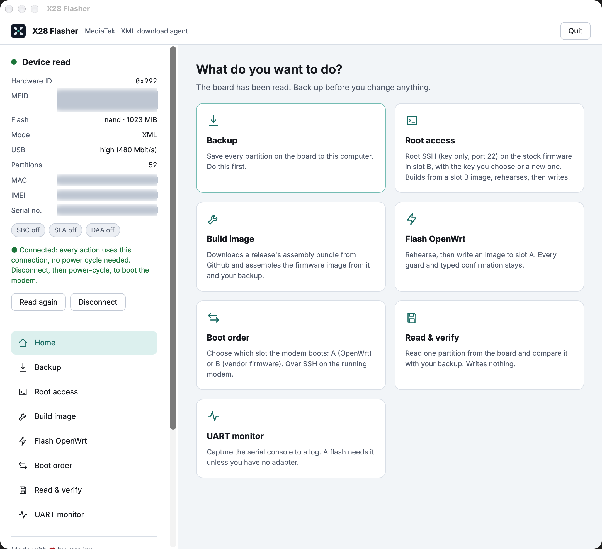
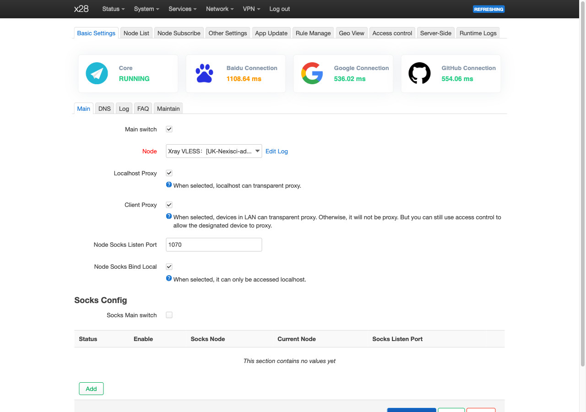
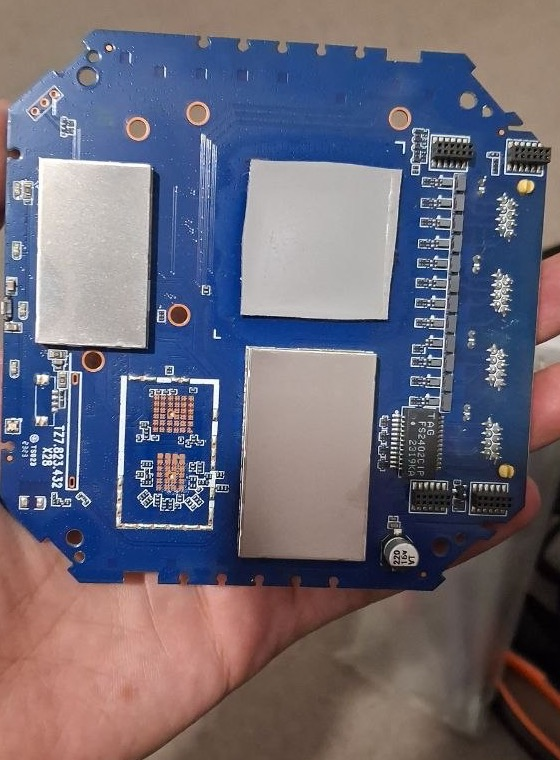

Get started
The flasher is the only supported installation path.
- Download the flasher for Windows, macOS (Apple silicon) or Linux (.deb or Arch).
- Connect the router with a USB-A to USB-C cable. USB-C to USB-C does not work.
- Follow the guided steps: connect, make a verified full backup, enable root access, prepare the image, flash and pick the boot slot. Keep a second copy of the backup offline.
- After boot open
https://192.168.70.1/cgi-bin/luci, accept the self-signed certificate and set a root password.


Downloads
Latest releases from GitHub.
X28 Flasher
Backup, build and flash, with recovery.
Firmware
Image bundle and signed sysupgrade files.
Verify downloads against the release's SHA256SUMS. Counts include every release since the first.
Hardware
Measured on a test unit running the native image. Full details.
| SoC | MediaTek MT6890 (T750), 4× Cortex-A55, aarch64 |
|---|---|
| CPU speed | 0.5 to 2.0 GHz, one shared frequency (schedutil) |
| Modem | Quectel RG500L, 5G, on the SoC's modem processor |
| Wi-Fi | MT7915, dual band |
| RAM | 1 GiB; Linux gets about 628 MiB, the rest is the modem's |
| Flash | 1 GiB NAND, 51 partitions; about 288 MiB for installs and settings |
| Kernel | Vendor 4.19.205 (not the official OpenWrt kernel) |
| Recovery port | MediaTek preloader 0e8d:2000, USB-A to USB-C only |

Package feed
A signed opkg feed built for the vendor kernel. Images already carry the line and key.
src/gz x28 https://mralinp.github.io/zlt-x28-openwrt/feed
Signing key 7fec994ab0d15b97. 208 of the 976 official kmod-* packages install; the rest are refused rather than installed broken.
Feed guide · Packages
Project plan
Target: slot A runs stable OpenWrt; stock stays in slot B until the first sysupgrade. Recovery is the flasher. Roadmap · Status
1 · Soak and test
48 h without unexplained reboots, Wi-Fi client and throughput tests, more LED states, idle CPU and RAM baseline.
2 · A/B sysupgrade
Signed images work. Left: keeping settings (#477), LuCI flash page (#478), interrupted-write hardware pass (#458).
3 · Stable release
A tagged stable release, the device page for the OpenWrt wiki, and build docs for other owners.
4 · Later
Fan control in LuCI (#47), SMS and voice on the native image, a 4.19 kernel plus kmod feed (#130).
Tests
Every test is logged with the command, the result and what it did not prove. Full test log